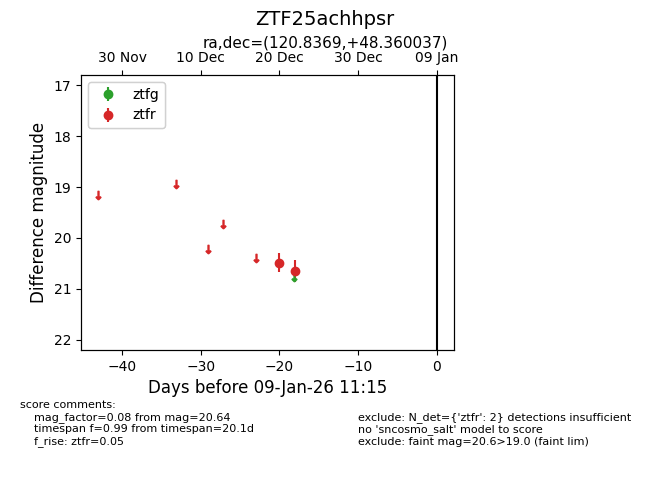
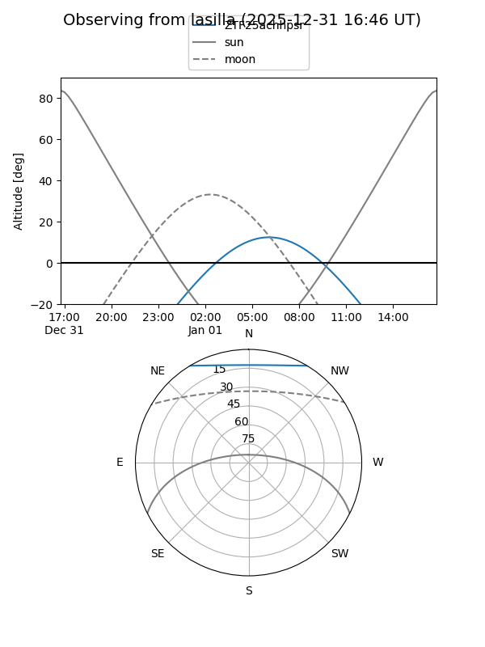
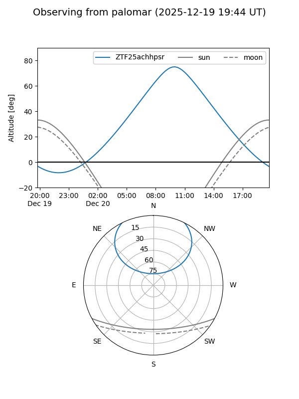

ZTF25achhpsr
Target ZTF25achhpsr at 2025-12-31 18:00
Aliases and brokers:
FINK: link
Lasair: link
ALeRCE: link
alt names
ZTF25achhpsr (ztf,fink_ztf)
Coordinates:
equatorial (ra, dec) = 120.8369,+48.36004
equatorial (HMS+DMS) = 08:03:20.86,+48:21:36.13
galactic (l, b) = (170.8048,+31.55308)
Flags:
Photometry:
last ztfr=20.64
2 ztfr detections
Lightcurve

Visibility


Additional plots